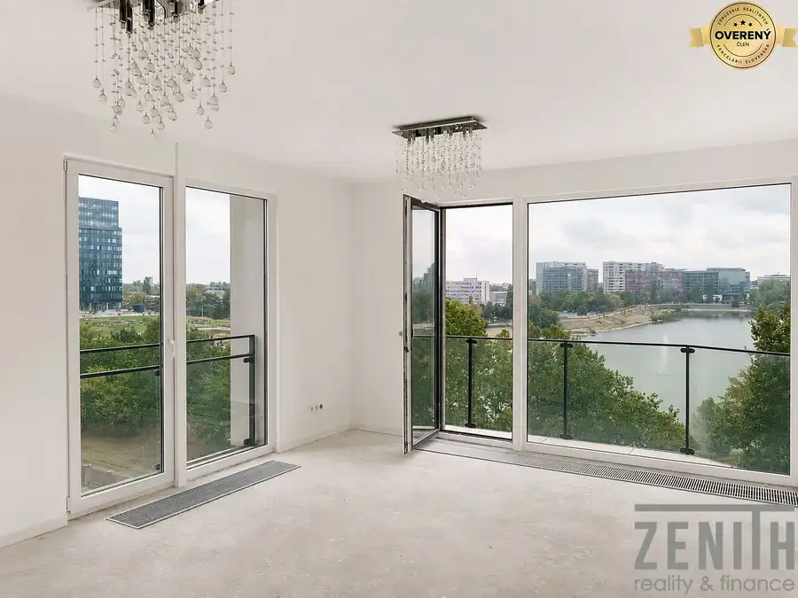
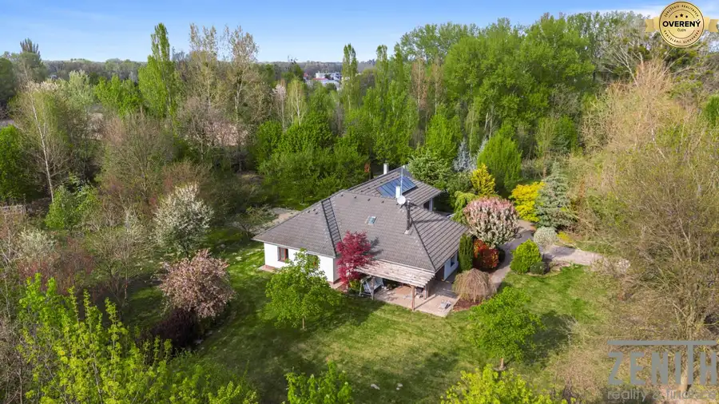
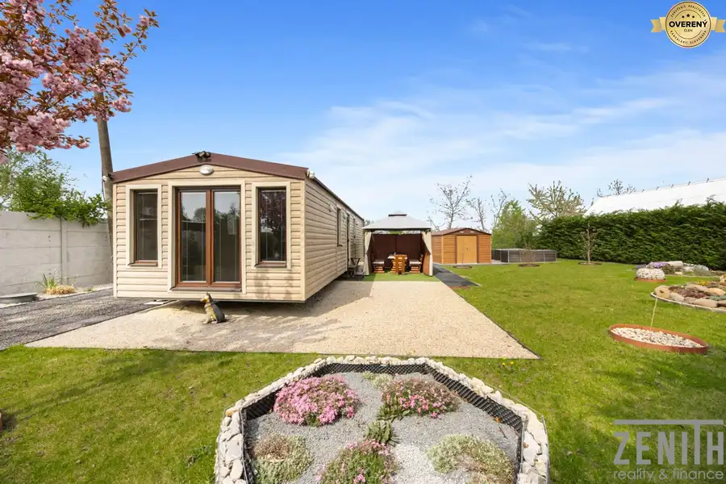
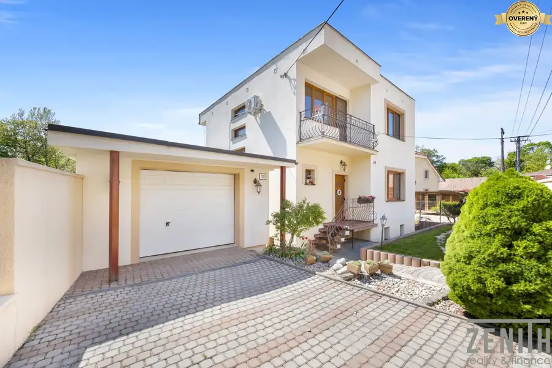
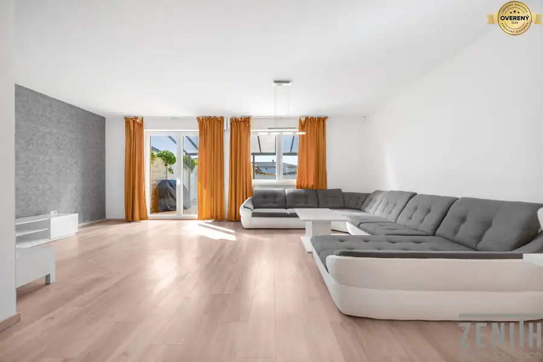
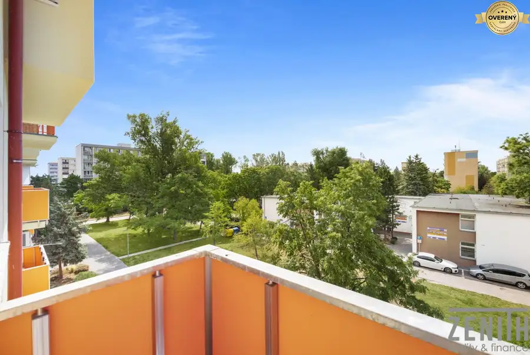
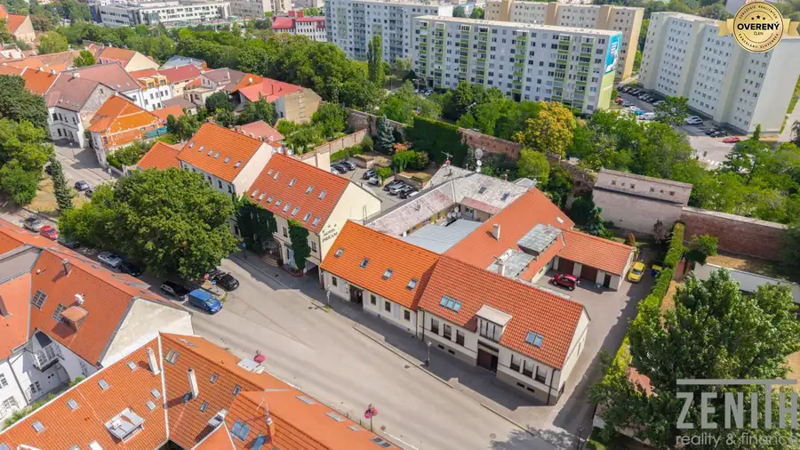
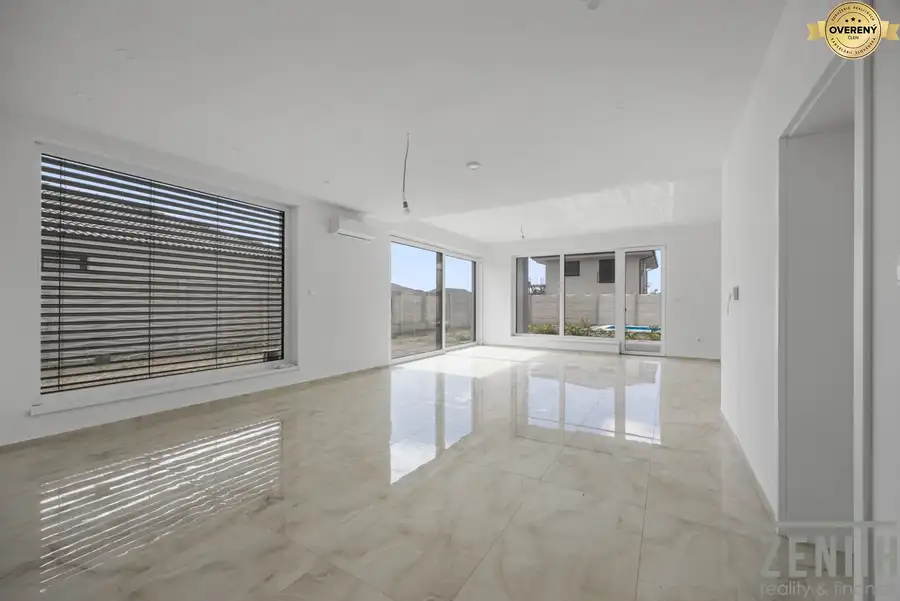
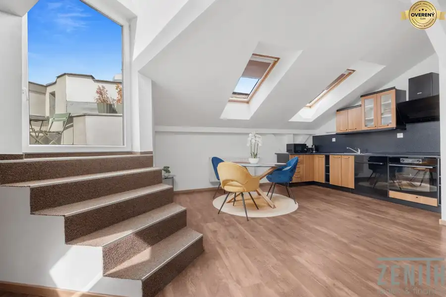
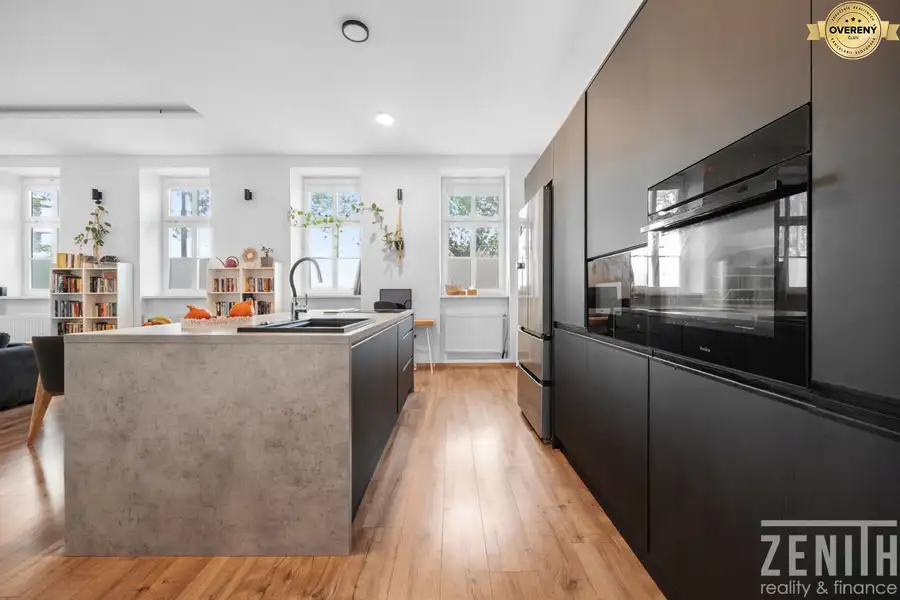

Aktuálna ponuka
Nehnuteľnosti, ktoré ponúkam
10 nehnuteľností na predaj a prenájom. Vyberte typ, alebo napíšte lokalitu.
10 z 10 ponúk

Byt10 Cena dohodouPREDAJ 3 izbový priestranný, slnečný, dvojpodlažný byt Vajnorská ulica Nové Mesto, Bratislava 3-izbový125 m²6. podlažie Zenith reality Vám exkluzívne ponúka na predaj slnečný dvojpodlažný byt s veľkou terasou vo vyhľadávanej lokalite na Vajnorskej ulici v Bratislave.…
Rodinné domy10 589 000 €Vidiecke sídlo s hektárovým pozemkom Dunajský Klátov 5-izbový214 m² Priestor, kde sa komfort stretáva s prírodou a investičným potenciálom. Sú nehnuteľnosti, ktoré ponúkajú bývanie. A potom sú také, ktoré ponúkajú…
Chaty a chalupy10 94 900 €Na predaj štýlová chata pri Bohatskom jazere v Hurbanove Hurbanovo 3-izbový44 m² Ponúkame na predaj kompletne zariadenú 3-izbovú chatu v pokojnej a vyhľadávanej lokalite priamo pri Bohatskom jazere v Hurbanove. Nehnuteľnosť je…
Rodinné domy10 459 900 €REZERVOANÉ-5-izbový rodinný dom s krytým bazénom v Bernolákove Bernolákovo 190 m² Zenith Reality Vám ponúka na predaj priestranný, samostatne stojaci 5-izbový rodinný dom so 7-árovým pozemkom v tichej a vyhľadávanej časti…
Rodinné domy10 479 900 €Moderný rodinný dom s vlastnou záhradou v uzavretom komplexe s garážou Podunajské Biskupice, Bratislava 4-izbový123 m² Ponúkame na predaj kompletne dokončený krajný rodinný dom s úžitkovou plochou 123 m², situovaný v pokojnom a bezpečnom uzavretom rezidenčnom komplexe…
Byt5 237 000 €Priestranný 3-izbový byt s balkónom a potenciálom rekonštrukcie Ružinov, Bratislava 3-izbový68.4 m²3. podlažie Ponúkame na predaj **priestranný a slnečný 3-izbový byt v pôvodnom stave** na Exnárovej ulici v obľúbenej bratislavskej mestskej časti Ružinov –…
Byt10 298 900 €Unikát 5-izbový tehlový byt s terasou 123,3 m² s krytým státim Trnava 5-izbový123.3 m² Predstavujeme Vám výnimočnú a neopakovateľnú príležitosť bývania v najstaršej a najčarovnejšej časti Trnavy. Tento veľkorysý 5-izbový tehlový byt sa…
Rodinné domy10 598 900 €Moderný rodinný dom, ktorý vás prekvapí priestorom aj atmosférou Chorvátsky Grob 5-izbový210.14 m² Ponúkame na predaj priestranný rodinný dom – novostavbu z 08/2026, situovanú v obľúbenej lokalite Chorvátsky Grob. Nehnuteľnosť je ideálnou voľbou…
Byt10 494 900 €Bývanie s charakterom na prestížnej adrese 3-izbový byt s terasou Historické jadro, Bratislava 3-izbový94.75 m²3. podlažie Ponúkame na predaj elegantný 3-izbový byt s výmerou 90,73 m², situovaný v jednej z najprestížnejších častí Starého Mesta – na Tolstého ulici, v…
Rodinné domy10 889 000 €Súkromie, priestor a výnimočná adresa v srdci Bratislavy Staré Mesto, Bratislava ť265 m² Ponúkame na predaj jedinečný dvojpodlažný historický rodinný dom situovaný v jednej z najvyhľadávanejších lokalít Bratislavy, v bezprostrednej…Tomuto výberu zatiaľ nezodpovedá žiadna ponuka. Napíšte mi, čo hľadáte.